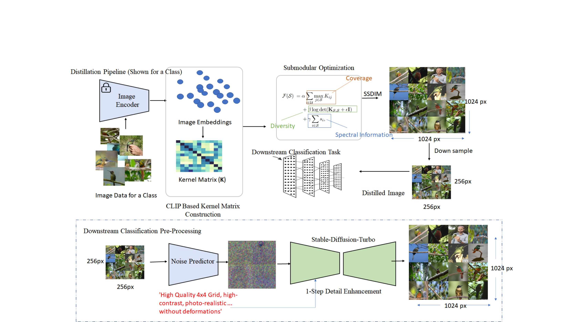
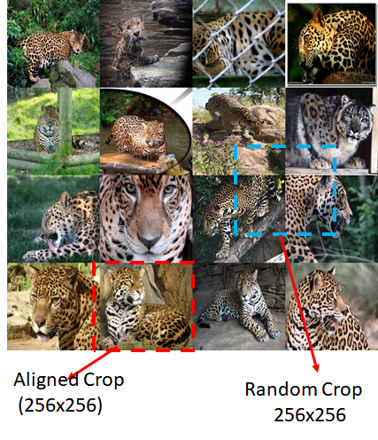
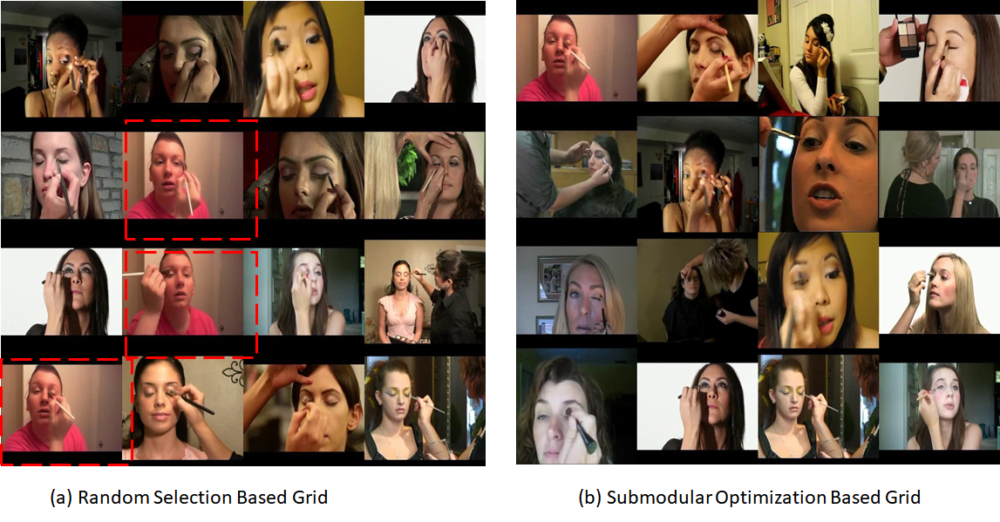

Grid Distillation: Compositional Image Distillation via Structured Generative Grids
Abstract
We present Grid Distillation, a generative dataset distillation framework that compresses large-scale datasets into a compact set of informative synthetic samples. Our method constructs high-resolution compositional grids via spectral submodular optimization, which injects world knowledge from CLIP representations to maximize semantic coverage and diversity. These grids are then downsampled into low-resolution distilled images optimized for diversity and representational efficiency. During training, a single-step diffusion reconstruction (based on Stable Diffusion Turbo) restores fine-grained spatial details from diffusion priors, bridging the gap between compact representations and natural image statistics. A grid-aware cropping strategy further enhances discriminability by probabilistically aligning crops with grid boundaries, maintaining compatibility with standard 224×224 inference inputs. Experiments on ImageWoof, ImageNette, ImageIDC, and ImageNet-1K demonstrate consistent improvements over existing dataset distillation methods across multiple IPC settings.
Method
Grid Distillation operates in three stages: principled submodular selection of exemplars, single-step diffusion-based detail recovery, and a grid-aware cropping strategy that preserves compositional structure at training time.

Pipeline overview. Starting from a pool of class images, we (1) extract normalized CLIP embeddings, (2) build an affinity kernel and compute spectral decomposition to obtain per-sample energy scores, and (3) solve the SSDIM submodular optimization to select L² exemplars, which are downsampled and enhanced via single-step diffusion for downstream classification.
Spectral Submodular Grid Selection (SSDIM)
Frames grid construction as a principled submodular optimization over CLIP embeddings — jointly maximizing coverage (facility-location), diversity (log-det DPP), and spectral informativeness. Selects 16 exemplars (L=4 grid) that maximally span the class manifold. Runtime: ~9–70s for 100–1K images.
Single-Step Diffusion Detail Reconstruction
Adapts InvSR's diffusion inversion to restore fine-grained spatial textures lost during downsampling. Uses Stable Diffusion Turbo with class-conditioned prompts for semantically faithful grid reconstruction in ~148ms per image. Adds only +16.9% one-time overhead over full training.
Grid-Aware Cropping Strategy
A probabilistic crop transform mixing grid-aligned crops (p=0.6, preserving semantic layout) with random crops (p=0.4, adding local variation). Maintains full compatibility with standard 224×224 inference — no changes to the downstream pipeline.
SSDIM Optimization Objective
F(S) = α ∑i∈U maxj∈S Kij + β log det(KS,S + εI) + γ ∑i∈S si
Every image represented by at least one exemplar — facility location.
Selected embeddings span large feature volume — log-det DPP term.
Bias toward high eigen-energy images on dominant manifold modes.

Grid-Aware Cropping. An aligned crop starts at multiples of (h, w), preserving the grid's semantic layout; a random crop samples arbitrary offsets, adding local variation for robustness.
Effect of Submodular Selection

Left: Random selection often yields redundant sub-images (highlighted in red). Right: Our spectral submodular optimization produces semantically diverse and spatially complementary grids, improving coverage and diversity over naive random sampling.
Datasets
We evaluate on four benchmarks spanning image classification and action recognition, covering both fine-grained and coarse-grained visual recognition tasks.
ImageWoof
10 fine-grained dog breed classes from ImageNet-1K. High inter-class similarity
makes it the most challenging benchmark in our evaluation.
~12,600 images · 256×256
ImageNette
10 easily distinguishable classes from ImageNet-1K with low inter-class
similarity. Serves as an easier classification benchmark.
~12,900 images · 256×256
ImageIDC
First 10 classes of ImageNet-100. Intermediate difficulty between
ImageNette and ImageWoof, used for broader generalization testing.
~13,000 images · 256×256
UCF-101 MidFrames
Middle frames extracted from UCF-101 video clips across 101 action
categories. Evaluated under few-shot classification (1/2/4/8-shot)
following the LDC protocol.
101 classes · ResNet-50 · 256×256
Results
Grid-Distil consistently achieves state-of-the-art performance across all benchmarks, architectures, and IPC regimes — with especially large gains in the low-data setting.
ImageWoof · IPC=10
ResNet-18
ImageNette · IPC=10
ResNetAP-10
ImageWoof · IPC=50
ResNet-18
ImageNet-1K · IPC=10
ResNet-18
UCF-101 · 1-shot
ResNet-50
Full comparison tables (ImageWoof, ImageNette, ImageIDC, ImageNet-1K, UCF-101) are in the paper.
ImageWoof Comparison · ResNet-18
| Method | IPC=10 | IPC=20 | IPC=50 | IPC=70 | IPC=100 |
|---|---|---|---|---|---|
| Herding | 30.2 | 32.2 | 48.3 | 49.7 | 59.3 |
| Minimax | 35.7 | 41.8 | 53.7 | 56.5 | 62.7 |
| D4M | 32.3 | 38.4 | 53.7 | 56.3 | 63.8 |
| VLCP (prev. SOTA) | 39.9 | 44.5 | 58.9 | 60.3 | 68.3 |
| Grid-Distil (Ours) | 65.5 | 75.2 | 84.3 | 85.5 | 85.9 |
All results at 256×256 · ResNet-18 backbone · Best results in bold in the paper. Full table with all architectures (ConvNet-6, ResNetAP-10, ResNet-18) in the paper.
Detail Enhancement: Diffusion vs. Bilinear · ResNetAP-10
Single-step diffusion reconstruction consistently outperforms naive bilinear upsampling, especially on fine-grained datasets.
| Dataset | Bilinear Upsampling | Diffusion Enhancement (Ours) | ||||
|---|---|---|---|---|---|---|
| IPC 10 | IPC 20 | IPC 50 | IPC 10 | IPC 20 | IPC 50 | |
| ImageIDC | 74.7 | 79.8 | 87.7 | 73.5 | 79.7 | 87.1 |
| ImageNette | 81.5 | 85.7 | 91.5 | 83.3 | 87.3 | 92.7 |
| ImageWoof | 62.5 | 73.1 | 82.2 | 63.9 | 73.7 | 82.4 |
ImageNette and ImageWoof show clear gains from diffusion enhancement; ImageIDC is comparable due to lower-frequency visual composition.
Key Ablation Findings
- Coverage (α) dominates — the most important term in the SSDIM objective; setting α=1.0 alone achieves 78.2% on ImageWoof vs 74.6% random baseline.
- Diffusion enhancement adds +14.6 pp on ImageNet-1K (50.0% vs 35.4% bilinear), showing the value of recovering high-frequency spatial details.
- Semantic prompts help — adding action labels in UCF-101 (Grid-LDC-Labels) gives consistent gains across all 1/2/4/8-shot regimes.
Hyperparameters (fixed across all datasets)
Limitations & Broader Impact
Limitations
- SSDIM requires a pretrained CLIP encoder — performance may degrade on highly domain-specific datasets where CLIP embeddings are less informative.
- The single-step diffusion enhancement adds a one-time preprocessing cost (~918ms per image on A6000) that may be prohibitive at very large scales.
- Grid size is fixed at L=4 — optimal grid size may vary across datasets with different intra-class diversity characteristics.
- Current evaluation focuses on image classification and action recognition; generalization to detection or segmentation tasks remains unexplored.
Broader Impact
- Efficiency: Compact distilled datasets reduce storage, compute, and energy costs for model training — supporting sustainable AI development.
- Privacy: Distilled surrogates enable model training without direct access to raw data, benefiting privacy-sensitive domains like healthcare.
- Accessibility: Lower data requirements democratize model training for researchers without large compute budgets.
- Risk: As with all dataset compression methods, distilled data may inherit or amplify biases present in the original dataset.
Video
BibTeX
@inproceedings{das2026griddistillation,
title = {Grid Distillation: Compositional Image Distillation
via Structured Generative Grids},
author = {Das, Biplab Ch and Das, Shouvik and
Gopalakrishnan, Viswanath},
booktitle = {Proceedings of the IEEE/CVF Conference on
Computer Vision and Pattern Recognition (CVPR)},
year = {2026}
}